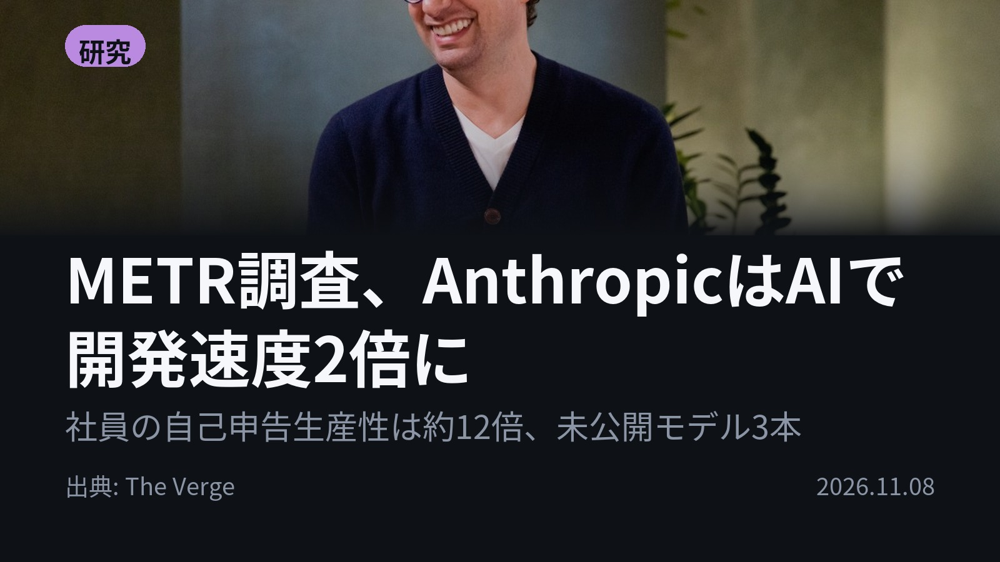
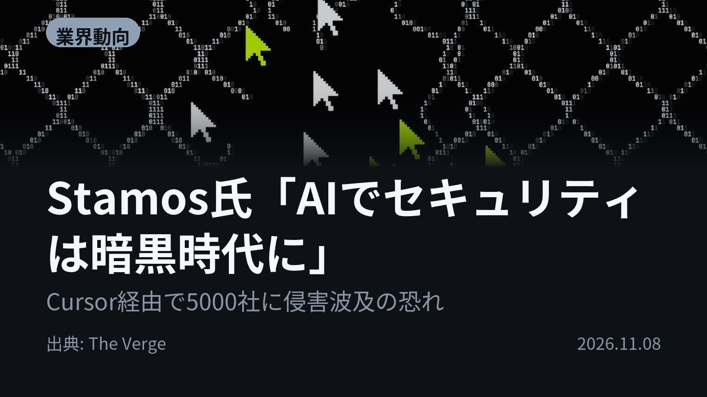
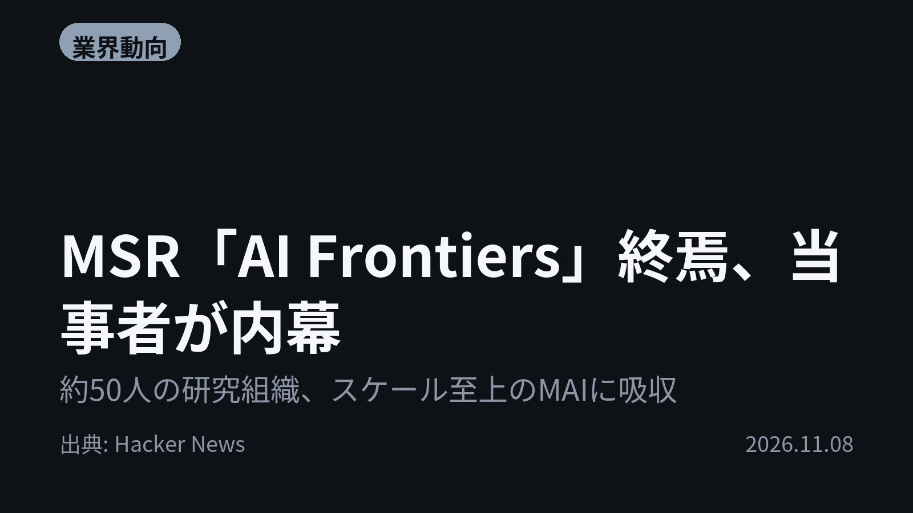
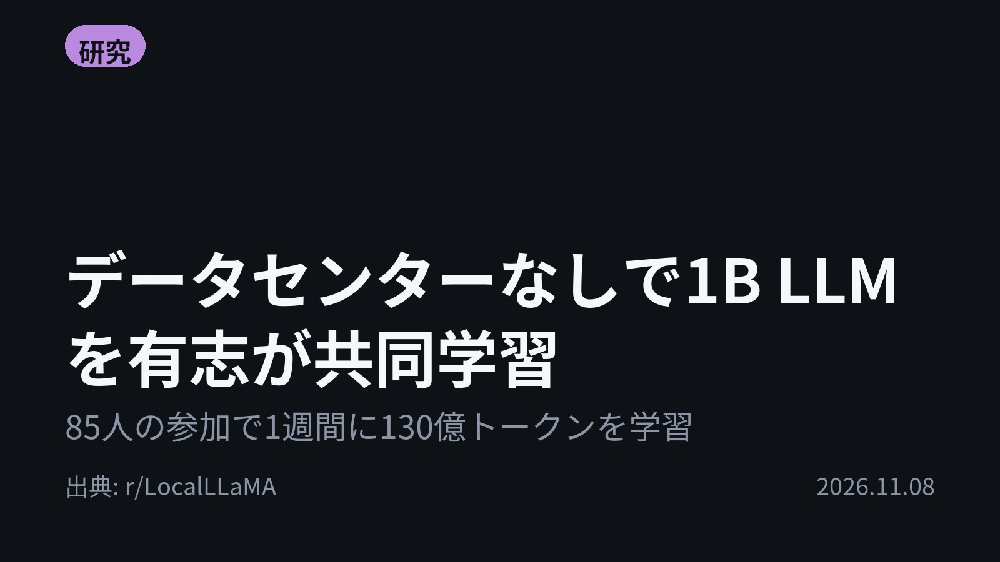

今日のAIニュース 下書き
2026-11-08 生成 11/09 08:01
⚠ ファクト照合で要確認の項目があります。
各ニュースの警告を確認してから投稿してください。
X（4投稿）
METR調査、AnthropicはAIで開発速度2倍に
原題: Why a new report on Anthropic automating AI development is alarming researchers

社員の自己申告で、生産性はAIなしの約12倍。 AI安全性研究機関METRがAnthropic社内を11週間調査。モデルの改善速度は1年前の約2倍で、加速の大半はAIによるものと結論。未公開モデル3本も判明。 #AI #Anthropic （出典: The Verge）
重み 216 / 280（見た目 132字）
要確認:
［数値］1年 — この数値の根拠が本文に見つかりません
［数値］10月 — この数値の根拠が本文に見つかりません
Stamos氏「AIでセキュリティは暗黒時代に」
原題: AI broke the cybersecurity world. What’s next?

盗まれたAPIキーが、5000社への入口になった。 Stamos氏によると、Fireworksへの侵入で盗まれたキーでCursorに侵入され、不正なプラグインが5000社に届いた。 #AI #サイバーセキュリティ （出典: The Verge）
重み 193 / 280（見た目 119字）
要確認:
［固有名詞］プラグイン — この語が本文に見つかりません
［固有名詞］セキュリティ — この語が本文に見つかりません
［固有名詞］スタンフォード — この語が本文に見つかりません
MSR「AI Frontiers」終焉、当事者が内幕
原題: The end of Microsoft Research's AI Frontiers group

研究か、規模か。Microsoftで路線が割れた。 約50人の研究組織「AI Frontiers」が9月上旬にMicrosoft AIへ統合。当事者いわく、MAIの方針は規模の拡大で「研究ではない」。 #AI #Microsoft （出典: Hacker News）
重み 197 / 280（見た目 130字）
要確認:
［数値］9月 — この数値の根拠が本文に見つかりません
［数値］2倍 — この数値の根拠が本文に見つかりません
［固有名詞］エージェント — この語が本文に見つかりません
［固有名詞］リターン — この語が本文に見つかりません
［固有名詞］Hacker — この語が本文に見つかりません
［固有名詞］News — この語が本文に見つかりません
データセンターなしで1B LLMを有志が共同学習
原題: Crowd-v1 - The collaborative LLM

データセンターなしで、LLMは作れるのか。 有志のCrowdGPTが、10億パラメータのCrowd-v1を0ドルで共同学習中。参加者85人で1週間に130億トークンを学習。目標はQwen3-0.6B以上。 #生成AI #LLM （出典: r/LocalLLaMA）
重み 201 / 280（見た目 129字）
要確認:
［数値］10億 — この数値の根拠が本文に見つかりません
［数値］130億 — この数値の根拠が本文に見つかりません
［固有名詞］データセンター — この語が本文に見つかりません
［固有名詞］パラメータ — この語が本文に見つかりません
［固有名詞］トークン — この語が本文に見つかりません
［固有名詞］オープンソース — この語が本文に見つかりません
［固有名詞］ソースコード — この語が本文に見つかりません
Instagram（カルーセル 6枚）


Anthropicでは、この1年で「過去約2年分」の進歩が起きていた。 外部機関の社内調査から、個人GPTを集めた共同学習まで。AI開発の「速さ」と「作り方」をめぐる4本です。 1. METRによると、加速は学習に使う計算資源を増やしただけでは説明できず、10月時点では大半がAIによるもの。いまはAIが研究者を手助けする形が中心だが、完全に自律した貢献が増える兆しもあるという。報告書の一部はAnthropic側が黒塗りにしている。(The Verge) 2. Stamos氏はCognitionの最高セキュリティ責任者で、スタンフォード大学の講師も務める。ロシアや北朝鮮のような国家主体を含む攻撃者が、AIで脆弱性の発見と悪用を同時に進めていると話す。長い目で見れば悲観していないが、新しい時代に適応するまでは「暗黒時代」が続くとみている。(The Verge) 3. AI Frontiersは、エージェントを連携させる基盤Autogenや、PCを操作するエージェントFaraを手がけた組織。当事者は、Full Bandwidth Transformerの変種が2倍のサイズのモデルに匹敵しうるというBytedanceの実験を挙げ、「研究のリターンは現実的で大きい」と反論している。(Hacker News) 4. まずは1Bモデルで概念実証を行い、参加者が集まれば総7B・稼働1BのMoE（複数の専門家モデルを切り替える構造）や30B規模に広げる構想。完全に非営利のオープンソースで、ソースコードはGitHubで誰でも確認できる。(r/LocalLLaMA) AIは研究も攻撃も加速させていて、モデルの作り方をめぐる路線の違いもはっきり見えた1日でした。 毎朝4本、AIニュースの要点をまとめています。見逃したくない方はフォロー、あとで読み返すなら保存をどうぞ。 #AI #生成AI #人工知能 #テクノロジー #AIニュース #ArtificialIntelligence #TechNews #MachineLearning #機械学習 #LLM #大規模言語モデル #AI活用 #Claude #Anthropic #METR #サイバーセキュリティ #Cybersecurity #Cursor #Microsoft #MicrosoftResearch #オープンソース #LocalLLaMA
1012字（Instagram上限 2,200字）
この日の選定理由
METR調査、AnthropicはAIで開発速度2倍に
AIがAI開発そのものを加速させていることを、外部機関が社内を11週間調べて示した数少ない証拠です。一方で報告書の一部は黒塗りにされており、最先端開発の透明性という課題も残っています。
Stamos氏「AIでセキュリティは暗黒時代に」
AIによって脆弱性の発見と悪用が同時に速まり、攻撃が連鎖する状態が続いていると、第一線の専門家が語っています。AI開発ツールそのものが攻撃の経路になっている点は、開発者にも身近なリスクです。
MSR「AI Frontiers」終焉、当事者が内幕
大手AI組織の中でも「研究」と「規模の拡大」のどちらを優先するかで方針が割れていることが、当事者の言葉で見えてきます。研究によって学習・推論コストを半減できる可能性があるという主張は、業界の投資判断を考える材料になります。
データセンターなしで1B LLMを有志が共同学習
大手AI企業に頼らず、個人の余っているGPUを集めてモデルを学習させるという試みです。実現すればオープンなモデルの作り方の選択肢が広がります。